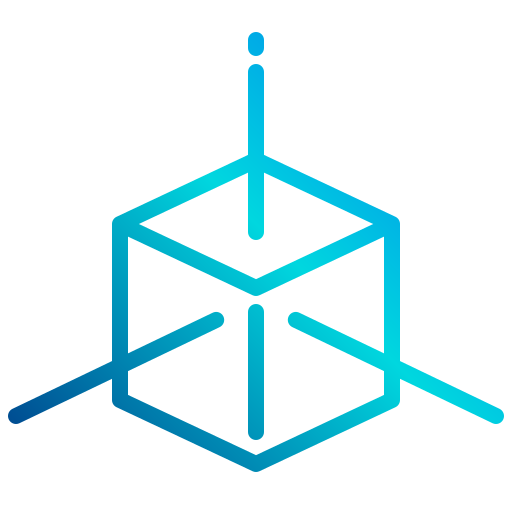

Welcome To Porterfolio
My name is Connor Porter, and welcome to my 'Porter'-folio. Here you'll be able to find my 3D models and props that I've created, ranging from my best projects to latest projects.
To view my Works, you can use the sidebar to the right! There is also a brief overview of each page below.
Best Project
The Best Project page will include what I think is my best work to date, this page will be updated as my skills grow and my projects get better and better.
Latest Project
The Latest Project page will contain either my latest completed project or one that is currently in progress, My current latest project is Creative Industry Response, see the Latest Project Page for more details and see below for a preview of the project.
Past Projects
The Past Projects Page will include projects that aren't in the previous two sections that I think are worth showing off.
Current Project
The current project page shows what I am currently working on.